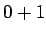
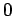
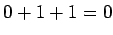
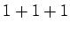
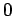
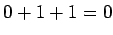
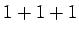
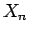

Next: แนวคิดของการพัฒนาเทคโนโลยีคอมพิวเตอร์
Up: comor
Previous: Contents
Contents
Index
- การเติบโตเชิงปริมาณของคอมพิวเตอร์ในแต่ละประเภท
- กราฟแสดงจำนวนของคอมพิวเตอร์ในสถาปัตยกรรมหลักที่มีขายอยู่ในท้องตลาด
- ลำดับชั้นของซอฟต์แวร์
- ลำดับขั้นของการแปลงในภาษาต่างๆ
- โครงสร้างการทำงานคอมพิวเตอร์มาตรฐาน
- คอมพิวเตอร์แบบตั้งโต็ะ
- การทำงานของหน้าจอแสดงผล
- ภายในเครื่องคอมพิวเตอร์แบบตั้งโต๊ะ
- ภาพขยายของโปรเซสเซอร์ ชิป Pentium IV
- ภายในของฮาร์ดดิสก์ ที่ประกอบด้วยแผ่นจานแม่เหล็ก และหัวอ่าน
- แนวโน้มการขยายขนาดของหน่วยความจำ
- กระบวนการทำชิปโปรเซสเซอร์
- เวเฟอร์ขนาด 8 นิ้ว ที่บรรจุโปรเซสเซอร์
- แผงระบายความร้อนที่ออกแบบมาขนาดใหญ่ที่จะกระจายความร้อนออกจากตัวโปรเซสเซอร์
- แนวโน้มประสิทธิภาพของคอมพิวเตอร์
- คอมพิวเตอร์ ENIAC
- คอมพิวเตอร์ UNIVAC I (Universal Automatic Computer)
- เครื่อง System/360 สี่รุ่น
- เครื่องคอมพิวเตอร์ Cray-1
- เครื่องคอมพิวเตอร์แอปเปิ้ล II
- คอมพิวเตอร์ Xerox Alto
- แอดเดรสในหน่วยความจำ และ ข้อมูลที่บรรจุในหน่วยความจำ
- การแบ่ง Word สำหรับแอดเดรสในหน่วยความจำ และ ข้อมูลที่บรรจุในหน่วยความจำ
- แอดเดรสในหน่วยความจำ และ ข้อมูลที่บรรจุในหน่วยความจำ
- ตัวประมวลผลตรรกะระหว่างภาษา C และ JAVA กับชุดคำสั่งของ MIPS
- การทำงานของ Conditional Branch if-then-else กล่องทางซ้ายแสดงการทำงานในส่วนของ then ส่วนกล่องทางขวาแสดงการทำงานในส่วนของ else.
- ค่าในสแตก ก่อน ระหว่าง และหลังการเรียกฟังก์ชั่น a) ก่อน b) ระหว่าง c) หลัง การเรียกฟังก์ชั่น
- ค่าในสแตก ก่อน ระหว่าง และหลังการเรียกฟังก์ชั่น a) ก่อน b) ระหว่าง c) หลัง การเรียกฟังก์ชั่นเมื่อมีการใช้ frame pointer
- การจัดสรรบริเวณใช้งานของหน่วยความจำในคอมพิวเตอร์ MIPS
- วิธีการอ้างอิงข้อมูลจากคำสั่ง MIPS: ตัวดำเนินการในคำสั่งจะมีการแลเงา, ตัวดำเนินการในโหมด 3 อยู่ในหน่วยความจำ ในขณะที่ตัวดำเนินการในโหมด 2 อยู่ในรีจีสเตอร์ สำหรับในโหมด 1 ตัวดำเนินการเป็นส่วนหนึ่งของคำสั่งที่มีขนาด 16 บิต ในโหมด 4 และ 5 มีตัวดำเนินการในหน่วยความจำ โดยที่โหมด 4 ทำการเลื่อนฟิลด์ 16 บิตไปทางซ้าย 2 บิต และทำการบวกกับค่า PC ในส่วนของโหมด 5 ทำการต่อ 26 บิตกับ 4 บิตบนของ PC หลังจากการเลื่อนฟิลด์ 26 บิตไปทางซ้าย 2 บิต
- ขั้นตอนของการแปลภาษา C: เริ่มจากแปลจากภาษาระดับสูงลงไปเป็นภาษาแอสแซมบลี และจากภาษาแอสแซมบลีเป็น object module ในภาษาเครื่อง ตัว linker จะเป็นตัวเชื่อมโมดูล และ ไลบราลี่ต่างๆ เข้าด้วยกัน เพื่อจัดการเรื่องตัวแปร และการอ้างอิงถึงค่าต่างๆ ตัว loader จะเป็นตัวหาส่วนของหน่วยความจำที่เหมาะสม เพื่อทำการประมวลผลต่อไป
- ขั้นตอนการบวก เริ่มจากการบวกบิตทางขวาสุด  ได้ผลลัพธ์
 , และมีตัวทดเท่ากับ  ต่อมาทำการบวกบิตที่สอง , และมีตัวทดเท่ากับ , ในหลักที่สามจะเป็นการบวก  ได้ผลลัพธ์ , และมีตัวทดเท่ากับ , ในหลักสุดท้าย
, และมีตัวทดเท่ากับ  ต่อมาทำการบวกบิตที่สอง , และมีตัวทดเท่ากับ , ในหลักที่สามจะเป็นการบวก  ได้ผลลัพธ์ , และมีตัวทดเท่ากับ , ในหลักสุดท้าย  ได้ผลลัพธ์ , และมีตัวทดเท่ากับ
ได้ผลลัพธ์ , และมีตัวทดเท่ากับ
- กรณีของ Overflow สำหรับการบวกหรือลบ
- หนึ่งบิต ALU ที่รองรับการทำงานของ add, sub, and, or และ not
- Carry Ripple Adder
- ฮาร์ดแวร์ของการคูณแบบลำดับแบบแรก
- วิธีการคูณโดยใช้ฮาร์ดแวร์ในรูป 3.5
- ฮาร์ดแวร์ของการคูณแบบลำดับที่ทำการปรับปรุง
- ฮาร์ดแวร์การคูณที่มีความเร็วสูง
- ฮาร์ดแวร์สำหรับการหารชนิดแรก
- ระเบียบวิธีการหารสำหรับฮาร์ดแวร์ในรูป 3.9 ถ้าค่า Remainder มีค่าเป็นบวก ค่าตัวหารน้อยกว่าตัวตั้งหาร จึงใส่ค่าหนึ่งที่ผลลัพธ์ ถ้าค่าเศษมีค่าเป็นลบ หมายถึงค่าตัวหารมีค่าน้อยกว่าตัวตั้งหาร ในขั้นตอน 2b จึงใส่ค่าศูนย์ลงในผลลัพธ์ ในขั้นตอนการหารทั้งหมดมี 33 ขั้นตอน
- ตัวอย่างการหารตามระเบียบวิธี ในรูป 3.10
- ฮาร์ดแวร์สำหรับการหารที่ได้รับการปรับปรุง
- การแสดงค่าเลข Floating Point ในย่านต่างๆ ของ IEEE 754
- แสดงระเบียบวิธีการบวกเลขไบนารี Floating-Point
- ฮาร์ดแวร์สำหรับบวกเลข Floating-Point
- ขั้นตอนการคูณ Floating Point
- จำนวนผู้โดยสาร, พิสัยการเดินทาง, และความเร็วของเครื่องบินโดยสารพาณิชย์แบบต่างๆ
- เวลาตอบสนองนิยาม 1
- เวลาตอบสนองนิยาม 2
- อัตราผลสำเร็จที่สามารถทำได้ของระบบ
- อัตราผลสำเร็จที่สามารถทำได้ของระบบ
- ประสิทธิภาพของโปรเซสเซอร์ Pentium 4 ที่ Clock Speed
- ประสิทธิภาพของโปรเซสเซอร์ SPECINT2000 และ SPECFP2000 ในสภาวะต่างๆ
- ภาพรวมของการออกแบบสร้างโปรเซสเซอร์ MIPS
- เกตพื้นฐาน
- พื้นฐานการทำงานของ Multiplexer
- Datapath ของโปรเซสเซอร์แบบ Single Cycle ที่มีรายละเอียดเพิ่มขึ้นในส่วนของ Multiplexer และ ส่วนสายสัญญาณควบคุม
- D Latch และ D Flip Flop และการทำงานของ Flip Flop
- วงจรลอจิกแบบ Combinational, State Element และ การเปลี่ยนแปลงของสัญญาณนาฬิกา
- วิธีการกระตุ้นด้วยสัญญาณนาฬิกาโดยใช้ขอบสัญญาณนาฬิกา ที่การอ่านและเขียนสามารถทำได้ในวงรอบสัญญาณนาฬิการเดียวกัน
- ส่วนประกอบของเส้นทางข้อมูลที่ประกอบด้วย Memory, Program Counter, และ ALU
- ส่วนของเส้นทางข้อมูลสำหรับการเรียกคำสั่งและเพิ่มค่าคำสั่งสำหรับวงรอบต่อไป
- Register File และ ALU ขนาด 32 บิต
- หน่วยความจำข้อมูล (Data Memory) และ Sign Extend
- ส่วนของเส้นทางสำหรับการประมวลคำสั่ง Branch
- เส้นทางข้อมูลสำหรับคำสั่งแบบ R-Type
- เส้นทางข้อมูลสำหรับคำสั่ง Branch
- การตั้งค่า ALUOp สำหรับคำสั่งแบบ R-Type
- Truth Table สำหรับการออกแบบวงจรควบคุม ALU
- รูปแบบของคำสั่ง R-Type, load-store, และ Branch
- เส้นทางข้อมูลสำหรับโปรเซสเซอร์ MIPS โดยมี Multiplexer และ สัญญาณควบคุมที่จำเป็น
- เส้นทางข้อมูลสำหรับโปรเซสเซอร์ MIPS ที่ประกอบกับชุดควบคุม
- Truth Table สำหรับชุดควบคุมโปรเซสเซอร์ MIPS
- การทำงานของเส้นทางข้อมูลสำหรับคำสั่ง add $t1, $t2, $t3
- การทำงานของเส้นทางข้อมูลสำหรับคำสั่ง lw $t1, offset($t2)
- Truth Table สำหรับสร้างวงจรลอจิกของชุดควบคุม ทำการเทียบฟิลด์ของ Opcode ในคำสั่งกับสัญญาณควบคุมต่างๆ
- การทำงานของเส้นทางข้อมูลสำหรับคำสั่ง beq $t1, $t2, offset
- รูปแบบของคำสั่งสำหรับคำสั่ง jump
- เส้นทางเดินของมูลของคำสั่ง jump ที่เพิ่มสายสัญญาณควบคุมเพิ่มเติมสำหรับคำสั่ง jump
- เส้นทางข้อมูลในภาพรวมของการออกแบบสร้างโปรเซสเซอร์แบบหลายวงรอบสัญญาณนาฬิกา
- รายละเอียดเส้นทางข้อมูลของโปรเซสเซอร์แบบหลายวงรอบสัญญาณนาฬิกา
- สัญญาณควบคุมสำหรับประกอบการทำงานของเส้นทางข้อมูลของโปรเซสเซอร์แบบหลายวงรอบสัญญาณนาฬิกา
- โปรเซสเซอร์แบบหลายวงรอบสัญญาณนาฬิกา ที่รวมการทำงานของสัญญาณควบคุม ชุดควบคุม ในการเขียนค่า PC ใหม่
- การทำงานระดับสูงของการควบคุม Finite State Machine
- Finite State Machine ที่นำมาใช้งานในชุดควบคุม ที่เป็น Moore Machine
- แผนภูมิ State Diagram สำหรับชุดควบคุม
- การปรับปรุงเส้นทางข้อมูลสำหรับรองรับ Exception ในโปรเซสเซอร์
- แผนภูมิการกำหนดการทำงานของสถานะในการควบคุมคอมพิวเตอร์ของโปรเซสเซอร์ที่ทำงานหลายวงรอบสัญญาณนาฬิกา
- การเปรียบเทียบเชิงอุปมาในการทำไพพ์ลายน์ของการซักผ้า
- เวลาที่ใช้ในการทำงานของแต่ละคำสั่ง
- เปรียบเทียบการทำงานแบบวงรอบเดียวกับแบบไพพ์ลายน์ ในการประมวลผลสามคำสั่ง
- การทำงานของโปรเซสเซอร์ไพพ์ลายน์ของคำสั่ง add $s0, $t0, $t1
- การ forward ค่าที่คำนวณได้จากเอาท์พุทของ ALU ของคำสั่ง add ไปยังคำสั่ง sub
- การ load และ มี Data Dependency ต้องทำการหยุดไพพ์ลายน์
- การ Stall จาก Branch ที่ต้องรอ 200 ps ก่อนการทำงานต่อเนื่องกันไป ที่เกิดจาก Control Hazard
- การทำ Branch Prediction แบบ Not Taken
- เส้นทางข้อมูลของโปรเซสเซอร์ที่ทำงานในวงรอบเดียว ที่มีการแบ่งการทำงานออกเป็นสเตท 5 สเตท
- การทำงานของไพพ์ลายน์ ประหนึ่งว่าแต่ละคำสั่งมีเส้นทางข้อมูลของตนเอง
- โปรเซสเซอร์ที่ประกอบกับไพพ์ลายน์รีจีสเตอร์
- IF และ ID, สองสเตทแรกในการทำงาน ของคำสั่ง lw
- สเตทที่สาม ทำการประมวลผล EX ของคำสั่ง lw
- MEM และ WB, สเตทที่สี่และห้าในการทำงาน ของคำสั่ง lw
- สเตทที่สาม ทำการประมวลผล EX ของคำสั่ง sw
- MEM และ WB, สเตทที่สี่และห้าในการทำงาน ของคำสั่ง sw
- เส้นทางข้อมูลแบบไพพ์ลายน์ที่ถูกต้อง ที่มีการผ่านชื่อรีจีวเตอร์ ที่จะทำการเขียนตลอดไปยังสเตท WB
- การแลเงาส่วนประกอบฮาร์ดแวร์ที่ใช้ในคำสั่ง load ของโปรเซสเซอร์ไพพ์ลายน์
- แผนภาพไพพ์ลายน์แบบ Multiple-clock-cycle ในการประมวลผลคำสั่ง lw, sub, add, lw, และ add
- แผนภาพไพพ์ลายน์แบบ Multiple-clock-cycle ที่แสดงชื่อของแต่ละสเตทในการทำงาน
- แผนภาพไพพ์ลายน์แบบ Single-clock-cycle ในการประมวลผลคำสั่ง lw, sub, add, lw, และ add ตามลำดับ
- สายสัญญาณควบคุมตามจุดต่างๆ ของเส้นทางข้อมูลแบบไพพ์ลายน์
- การตั้งค่า ALUOp สำหรับคำสั่งแบบ R-Type
- Truth Table สำหรับชุดควบคุมโปรเซสเซอร์ MIPS
- สายสัญญาณควบคุมสำหรับสามสเตทหลัง
- เส้นทางข้อมูลที่มีความสมบูรณ์ทั้งรีจีสเตอร์ไพพ์ลายน์ และ สายสัญญาณควบคุม
- การประมวลผลชุดคำสั่งที่เกิด Hazard ที่ $2
- Dependency ระหว่างรีจีสเตอร์ไพพ์ลายน์และอินพุทของ ALU
- เส้นทางข้อมูลที่ไม่มีการ Forward และ มีการ Forward (ส่วนล่าง)
- ฮาร์ดแวร์ที่รองรับการ Forwarding สำหรับเส้นทางข้อมูลแบบไพพ์ลายน์
- ฮาร์ดแวร์ที่เพิ่มเติมสำหรับการตัดสินใจเลือก รีจีสเตอร์และค่า Immediate เพื่อจะเลือกระหว่างค่า Immediate และ ForwardB
- ลักษณะการเกิดปัญหาที่การ Forward ไม่สามารถที่จะแก้ไขปัญหา Hazard ได้
- การ Stall ไพพ์ลายน์
- ชุดควบคุมโปรเซสเซอร์แบบไพพ์ลายน์ที่มีส่วน Forward และ Hazard Detection
- ผลของการเกิด Control Hazard จากคำสั่ง Branch
- การทำงานของชุดคำสั่งขณะที่ Branch Taken
- การคาดเดา Branch แบบสองบิต
- วิธีการเติมคำสั่งใน Branch Delay Slot
- เส้นทางข้อมูลของโปรเซสเซอร์แบบไพพ์ลายน์ที่สมบูรณ์
- เส้นทางข้อมูลของโปรเซสเซอร์แบบไพพ์ลายน์รองรับการเกิด Exception
- เหตุการณ์หลังจากการเกิด Exception ที่คำสั่ง add
- โปรเซสเซอร์แบบไพพลายน์ที่ทำประมวลผลสองคำสั่งพร้อมกัน
- โปรเซสเซอร์ที่สามารถสลับคำสั่งในการประมวลผล แบบพลวัตร เพื่อเพิ่มประสิทธิภาพในการทำงาน
- Microarchitecture ของโปรเซสเซอร์ Pentium 4
- ไพพ์ลายน์ของโปรเซสเซอร์ Pentium 4
- โครงสร้างของหน่วยความจำแบบลำดับชั้น
- ชุดของหน่วยความจำขนาดเล็กที่สุด ที่สามารถแสดง/หรือไม่ได้แสดงในระดับของหน่วยความจำสองลำดับชั้นใดๆ
- โครงสร้างของลำดับชั้นของหน่วยความจำ เมื่อระยะห่างระหว่างหน่วยความจำและโปรเซสเซอร์เพิ่มขึ้น ขนาดของหน่วยความจำจะเพิ่มขึ้น และ ความเร็วจะลดลง (ใช้เวลาเพิ่มขึ้น)
- การเรียกข้อมูลในหน่วยความจำแคชก่อน และหลังจากการเรียกค่า  ที่เมื่อเริ่มแรกไม่อยู่ในแคช
- การทำ Direct Map บนแคชที่มี 8 ช่องและแสดงแอดเดรสของหน่วยความจำระหว่าง 0 ถึง 31 ที่มีการกำหนดให้ลงช่องเดียวกัน
- ในระบบแคชที่แสดงในรูป ส่วนล่างของแอดเดรสใช้เลือกตำแหน่งในแคช และเปรียบเทียบ tag ในการพิสูจน์
- กราฟแสดง Miss Rate เทียบกับขนาดของ Block
- Data Cache ของโปรเซสเซอร์ Intrinsity FastMATH
- แนวทางพื้นฐานในการการออกแบบหนวยความจำรองรับการทำงานแคช
- เปรียบเทียบตำแหน่งลงระหว่าง Direct Mapping, Set Associative Mapping, และ Fully Associative Mapping: Block 12 สามารถมีช่องลงได้ สองช่องใน 2-way Set Associative Cache
- แคชขนาด 8 Block ที่ทำการใช้งานเป็นแบบ Direct Mapping, 2-way Set Associative Mapping, 4-way Set Associative Mapping, และ Fully Associative Mapping
- ฮาร์ดแวร์ของแคชแบบ 4-way Set Associative
- หน่วยความจำของตำแหน่งอ้างอิงเสมือน ที่ถูกแปลงไปยังหน่วยความจำหลัก
- การ Mapping ระหว่างแอดเดรส Virtual และ Physical
- ตารางเพจที่ถูกบ่งชี้ด้วยหมายเลขเพจเสมือนเพื่อให้ได้มาซึ่งส่วนของตำแหน่งอ้างอิงที่สอดคล้องกัน
- ตารางเพจแปลงแต่ละเพจในหน่วยความจำเสมือนไปเป็นเพจในหน่วยความจำหลักและเพจที่เก็บไว้ในแผ่นจานบันทึก
- TLB ทำหน้าที่เป็นแคชบนตารางเพจสำหรับแต่ละช่องข้อมูลซึ่งแปลงไปเป็นเพจแท้จริง
- TLB และแคช ซึ่งมีโปรเซสของการทำงานใน Intrinsity FastMATH ตั้งแต่การแปลงตำแหน่งอ้างอิงเสมือนไปจนถึงข้อมูล
- โครงสร้างพื้นฐานของระบบ I/O
- แสดงการกระจายข้อมูลสำหรับ RAID 4 เปรียบเทียบกับ RAID 5
- แสดงการกระจายข้อมูลสำหรับ RAID 4 เปรียบเทียบกับ RAID 5
Vara Varavithya
2005-08-18